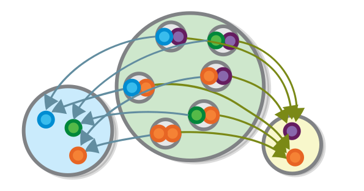
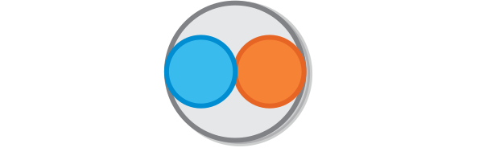
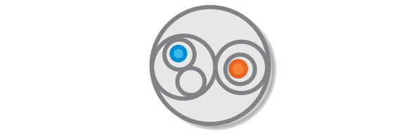
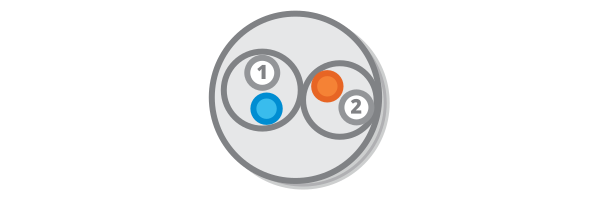
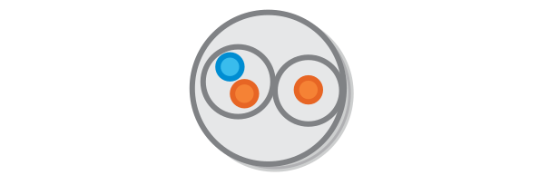
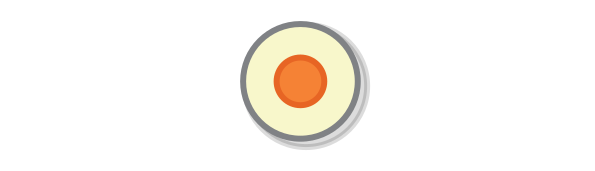
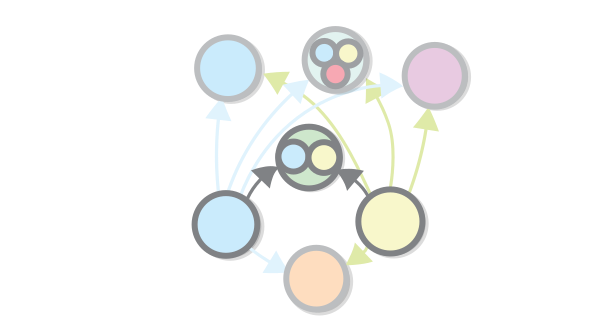
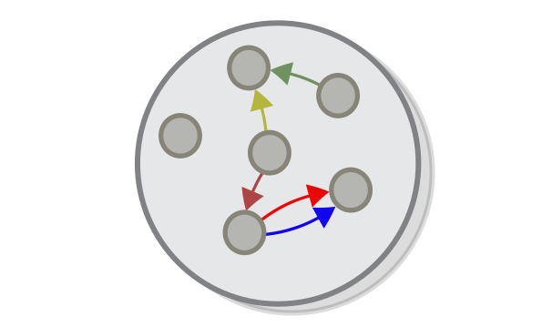
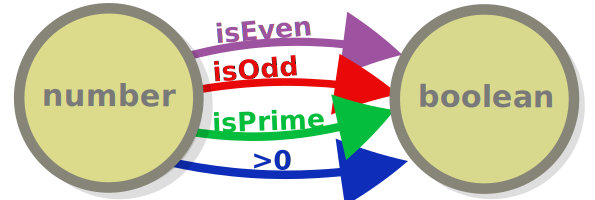
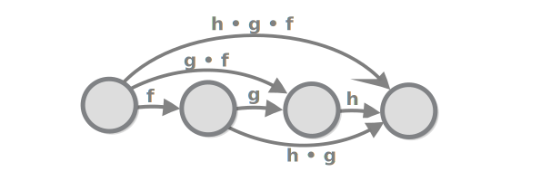

In this chapter we will continue with set theory and at the same time we will start exploring categories, and talking about why they are important.
In the previous chapter, we needed a way to make a set that is a composite of other sets that we already have. For example when we discussed mathematical functions, we couldn’t define + and - functions, because we only knew about functions that take one argument. When we talked about programming, we talked about the primitive types, Char and Number, and we mentioned that most of the types are composite types. So how do we construct those?
The simplest composite type, of the sets B, which contains b’s and the setY, which contains y’s is the the product or B and Y.

It is the set of pairs of b’s and y’s.

The product is denoted B x Y and it comes equipped with two functions for retrieving the b and the y from each (b, y).
Question: Why is this called a product? Hint: How many elements does it have?
We established that in programming sets resemble types and functions resemble functions. Products, in this case, are like stripped-out classes (also called records or structs). The composite sets (the ones which form the product) are just the class’s fields (also called members). The functions for accessing them are like what programmers call getter methods.
For example the famous OOP example of Person class with name and age fields is nothing more than a product of the set of strings, and the sets of numbers (we still haven’t defined strings and lists in terms of set theory but we will get to that). Objects with more than two values can be expressed as products the composites of which are themselves products.
Products can also be used for expressing functions which take more than one argument. For example, “plus” and “minus”, are functions from the set of products of two numbers to the set of numbers. (so +: R x R → R). Of course, we cannot draw the function itself, even partly, because it has too much arrows and it would look messy.
Joking, here it is.

Note that there are languages where the pair datastructure (also called a tuple) is a first-level construct, and multi-argument functions are really implemented in this way.
Now we will define the abstract concept of a product of two sets sets in terms of sets themselves. It is not hard: the product of two sets Y and B is just the set of all possible ordered pairs, which contain one element of the set Y and one element of the set B. Or formally speaking Y x B = { (y, b) } where y ∈ Y, b ∈ B (∈ means “is an element of”).

The real challenge is defining what a pair means in terms of sets. Note that the pair have to be ordered, so it cannot be just a set of the elements (formally speaking **A x B ≠ B x A for all A and B **). Some mathematical operations such as addition and multiplication don’t care about order, but others, such as subtraction, do. And in programming we have the ability to assign names to each member of an object, which accomplishes the same purpose as ordering does for pairs.
So the pair must be ordered, and sets aren’t. Turns out that that hasn’t stopped mathematicians from coming up with multiple ingenious ways to represent an ordered pair using sets. Let’s see them, just for fun. Here is the first one, which was discovered by Norbert Wiener in 1914. The definition is notable for its smart use of the uniqueness of the empty set.

The next one was discovered in the same year by Felix Hausdorff. In order to use that one, we just have to define “1”, and “2” first.

Discovered in 1921 Kazimierz Kuratowski, this one uses just the component of the pair.

In the previous chapter we provided a definition of a product by zooming in the individual elements of the sets and seeing what they can be made of. This gave us a low-level view of products. This time we will try to do the opposite - be as oblivious to the contents of our sets as possible. Instead of zooming in we will zoom out, and try define the product in terms of functions and functional composition. Effectively we will be working at a higher level of abstraction.
So let’s begin with an external diagram, showing the definition of the product. Disclaimer: I know that this is a somewhat weird notation, but don’t worry, we will not be using it for very long.

This diagram already contains the first piece of the puzzle: if we have a set G which is the product of sets Y and B, then we should also have functions which give us back the elements of the product, so G → Y and G → B.
This definition is not complete, however, because the product of G and B is not the only set for which such functions can be defined. For example:
A set of triples of Y x B x R for any random element R also qualifies.
If there is a function from G to B then the set G itself meets our condition for being the product, because it is connected to B and to itself.
Depending on our specific case there can be many other other such objects.

So how do we set apart all those “imposter” products from the one true product? Simple - they all can be converted to it. This is true, because:
More formally, in order for a set I to serve as an impostor for the product of B and Y and there should be two functions, which we will call b: I → B and y: I → Y. In order to prove that I is an impostor we need a function I → B x Y. That function is simply (programmers will understand this best) (a) → b(a) x y(a) for each a:I.

Notice that this definition does not rule out the sets which are isomorphic to the product - when we represents things using functions, an isomorphism is the same as equality.
We will now study a construct that is pretty similar to the product but at the same time it is very different. Similar because, like the product, it is a relation between two sets which allows you to unite them into one without erasing their structure. Different because it encodes a different type of relation between them - a product encodes an AND relation between two sets, while the sum encodes an OR relation. For example, a parent is either a mother of a father of a child, so the set of parent’s is a sum set of the sets of mothers and fathers.

Notice that the when a given object is an element of both sets, then it appears in the sum twice. This is why this type of sum of two sets is also called a disjoint union.
Question: Why is this called a sum?
Simply put, a sum of two sets is a set that contains all elements from the first set and all elements from the second one. But, as with the product, it is not so straightforward to represent sums in terms of sets. For example if two sets can have the same element as a member, their sum will have that element twice which is not permitted, because a set cannot contain the same element twice.
As with the product, the solution is to put some extra structure.

Like with the product, there is a low-level way to express a sum using sets alone. Incidentally, we can use pairs.

But again, this distinction is only rellevant only when the two sets have common elements.
You might already suspect, the interesting part is expressing the sum of two sets using functions. To do that we have to go back to the conceptual part of the definition. We said that sums express an OR relation between two things. A simple property of every OR relation is that if something is an A that something is also an A OR B (and the same is valid if it is B). For example if I am a man, I am also a man OR a woman. This is what OR means, right?
This relationship can be expressed as a function. Two functions actually - one for each set that takes part in the relation.

Why can it be expressed as a function? Because it is a many-to-one relationship.
What are we saying with this, if we apply it to the example, is simply that if parents are either mothers or fathers, then there surely exist a functions mothers → parents and fathers → parents.
You might already notice that this definition is pretty similar to the previous one, and the similarities don’t end here - here again we have sets that can be thought as impostor sums - ones for which these functions exists, but which aren’t real sums (where by “real sum” we mean a set which expresses the OR relation and contains no additional structure).

All these sets are, express relationships which are more vague than the simple sum and therefore given any such set there would exist a function from the sum to it.
| For exaple, there exist a trivial function between the set **Y | B ** and the set **Y | B | R**. |

This diagram captures the OR relation in the same way as the previous one captures the essence of AND.
If we have to compare the concepts of sum or and product we will find out that they are related:
Actually, the two concepts are captured by one and the same external diagram, just the arrows are flipped - many-to-one relationships become one-to-many and the other way around.
That’s normal right? After all, AND is the opposite of OR. The connection between the two has always been there, evidenced, for example, by the De Morgan’s law, citing that NOT (A AND B) ↔ (NOT A) OR (NOT B) (or to put it in everyday language, “If either A or B is false, then (and only then) A and B is also false). But only with category theory, this connection can be expressed in such a concise way:

Otherwise, when in category theory two concepts are captured by the same diagram, only with reversed arrows, we can say that the two concepts are dual to each other. That means that the concepts of product and sum are dual (this is why sum is also known as converse product, or coproduct in short).
Maybe it is time to see what a category is. Well, a category consists of objects (an example of which are sets) and morphisms which go from one object to another (which can be viewed as functions) and which should be composable. We can say a lot more about categories, and even present a formal definition, but for now it is suffice for you to remember that sets are one example of a category and that categorical objects are like sets, except that we don’t see their elements. This is why category-theoretic notions being captured by the external diagrams and strictly set-theoretic notions being captured by internal ones.
What other categories, or applications of category theory are there, other than sets? We already discussed one - types in programming languages. Remember that we said that programming types (classes) are somewhat similar to sets and programming functions are somewhat similar to functions between sets? This is another example of a connection between two things that we can be defined using category theory:
| Category Theory | Set theory | Programming Languages |
|---|---|---|
| Category | N/A | N/A |
| Objects and Morphisms | Sets and Functions | Classes and functions |
| N/A | Element | Object |
This diagram illustrates how category theory allows us to see the big picture when it comes to sets and similar structures - when we are at the realm of sets we can view the set as a collection of individual elements. In category theory we don’t have such notion, but we saw how taking this notion away allows us to define concepts such as the sum and product sets in a whole different and more general way.
NB: Do note how the world “Object” is used in both programming languages and in category theory, but for completely different things. The equivalent a categorical object is equivalent to a class in programming language.
Looking at the table I cannot help but notice the somehow weird, but otherwise completely logical symmetry (or perhaps “reverse symetry”) between the the world as viewed through the lense of set theory, and the way it is viewed through the (inverted) lens of cathegory theory:
| Category Theory | Set theory |
|---|---|
| Category | N/A |
| Objects and Morphisms | Sets and functions |
| N/A | Element |
By switching to external diagrams, we lose sight of the particular (the elements of our sets), but we have gained the ability to see the whole universe that we have been previously trapped in. The whole realm of sets, can be thought as one category, a programming language can also be thought as a category. The concept of a category allows us to find and analyse similarities between these and other structures.

One remark before we go - the last paragraphs I sound as if I’m comparing categories and sets and rooting for categories. I don’t want you to get the wrong impression that the two concepts are somehow competing with one another.
Perhaps that notion would be somewhat correct if category and set theory were meant to describe concrete phenomena, in the way that the theory of relativity and the theory of quantum mechanics in physics. Concrete theories are conceived mainly as descriptions of the world, and as such it makes sense for them to be connected to one another in some sort of hierarchy. Abstract theories, like category theory and set theory, on the other hand, are more like languages for expressing such descriptions. They still can be connected, and are connected in more than one way, but there is no inherent hierarchy between the two and therefore arguing over which of the two is more basic, or more general, is just a chicken-and-egg problem, as you would see in the next chapter.
Every category theory guide (including mine) starts by talking about set theory. However, looking back, I really don’t know why that is the case - surely most other books that focus around a specific subject don’t start by introducing an entirely different subject. Perhaps the set-first approach is the best way to introduce people to categories. or perhaps using sets to introduce categories is just one of the things that people just do, simply because everyone else does it. But one thing is for sure - we don’t need to study sets in order to understand categories. So in this chapter I would like to start over and talk about categories as a first concept. So pretend like it’s a new book:
So, a category is a collection of objects (things) where the “things” can be anything you want. Consider, for example, these colourful grey balls:

A category consists of a collection of objects as well as some arrows connecting some of them to one another, that we call (the arrows) morphisms.

Wait a minute - we said that all sets form a category, but at the same time any one set can be seen as a category on its own right (just one which has no morphisms). This is true and an example of a phenomenon that is very characteristic of category theory - one structure can be examined from many different angles and may play many different roles, often in a recursive fashion.
This particular analogy (a set as a category with no morphisms) is, however, not very useful. Not because it’s in any way incorrect, but because category theory is all about the morphisms. If in set theory arrows are nothing but a connection between a source and a destination, in category theory it’s the objects that are nothing but a source and destination for the arrows that connect them to other objects. This is why, in the diagram above, the arrows, and not the objects, are coloured: the category of sets should really be called the category of set functions.
Speaking of which, note that objects in a category can be connected by multiple arrows and that arrows having the same domain and codomain does not in any way make them equivalent.

Why is that is pretty obvious if we go back to set theory for a second (OK, maybe we really have to do this from time to time) - there are, for example, an infinite number of functions that go from number to boolean and the fact that they have the same input type and the same output type (or the same type signature, as we like to say) does not in any way make them equivalent to one another.

One of the few, or maybe even the only, requirement for a structure to be called a category is that two morphisms can make a third, or in other words that morphisms are composable - given two successive arrows with appropriate type signature, we can draw a third one that is equivalent to the consecutive application of the other two.

Formally, this requirement says that there should exist an operation (denoted with the symbol •) such that for each two functions g: A → B and f: B → C, there exists exactly one function (f • g): A → C.
NB: Note that functional composition is written from right to left. e.g. applying g and then applying f is written f • g and not the other way around (you can think of it as a shortcut to f(g(a))).
Again, note that this criteria is not met by just any morphism with this type signature. There is exactly one morphism that fits these criteria and there may be some which don’t.

The diagram above, uses colors to illustrate the fact that the green morphism is equivalent to the other two (and not just some unrelated morphism), but in practice this notation is a little redundant - the only reason to draw diagrams with arrows in the first place is represent paths between objects that are equivalent to each other, all other paths just belong in different diagrams. For this reason, we can drop the colors from our diagrams.

Diagrams that are like that (ones in which any two paths between two objects are equivalent to one another) are called commutative diagrams (or diagrams that commute). All diagrams that we have here (except the wrong ones) commute.
Functional composition is special not only because you can take any two morphisms with appropriate signatures and make a third, but because you can do so indefinitely, i.e. given n successive arrows, each of which starts from the object that the other one finishes, we can draw one (exactly one) arrow that is equivalent to the consecutive application of all n arrows.

This approach for building stuff is often used in programming. To see some examples, you don’t need to look further than the way the pipe operator in bash (|), that feeds the standard output of a program with the standard input of another program, is (ab)used (if you want to look further, note that there is a whole programming paradigm based on functional composition, called “concatenative programming”).
But let’s get back to the math. If we carefully review the definition above can see that it can be reduced to multiple applications of the following formula: given 4 objects and 3 morphisms between them f g h, combining h and g and then combining the end result with f** should be the same as combining h to the result of g and f (or simply (h • g) • f = h • (g • f).
Task: show how the definition can be reduced to the formula (the approach resembles mathematical induction).
This formula is true if and only if this diagram commutes.

Given that all our category-theoretic diagrams commute, we can say, in such cases, that the formula and the diagram are equivalent.
This formula (and the diagram) is the definition of a property called associativity. Being associative is required for functional composition to really be called functional composition (and for a category to really be called category), if only because it is required for us to be able to draw diagrams of a category’s objects and morphisms, as diagrams can only represent associative structures (if the diagram above does not commute it would be super weird).
Associativity is not just about diagrams, for example when we express relations using formulas, associativity just means that brackets don’t matter, in our formulas (as evidenced by the definition (h • g) • f = h • (g • f)). And it is not only about categories either, it is a property of many other operations on other types of objects as well e.g. if we look at numbers, we can see that the multiplication operation is associative e.g. (1 . 2) . 3 = 1 . (2 . 3). While division is not (1 / 2) / 3 = 1 / (2 / 3).
Ancient mathematicians invented the number zero that, although useless by itself, allowed them to define many useful numbers. In order to be able to define more stuff using morphisms in category theory, we too would want to define what we call the “identity morphism” for each object. In short, this is a morphism, that doesn’t do anything.

It’s important to mark this morphism, because there can be (let’s add the very important (and also very boring) reminder) many morphisms that go from one object to the same object, many of which actually do stuff. For example mathematics deals with a multitude of functions that have the set of numbers as domain and codomain, such as negate, square, add one, and are not at all the identity morphism.
Question: What is the identity morphism in the category of sets?
Why do we need to define a morphism that does nothing?
Once we have the concept of identity morphism defined we can have a category-theoretic definition of an isomoprhism (which is important, because the concept of an isomorphism is very important for cathegory theory): An isomorphism between two objects (A and B) consists of two morphisms - (A → B. and B → A) such that their compositions are equivalent to the identity functions of the respective objects.
Here is how this looks when expressed using a formulas:
Objects A and B are isomorphic
iff there exist mophisms
f: A → B
g: B → A
such that
f • g = idB
g • f = idA
And here is the same thing expressed with a commuting diagram.

Like the example with the law of associativity, the diagram expresses the same (simple) fact as the formula, namely that going from the one of objects (A and B) to the other one and then back again is the same as applying the identity morphism i.e. doing nothing.
For future reference, let’s repeat what a category is.
A category is a collection of objects (we can think of them as points) and morphisms (arrows) that go from one object to another, where:
This is it.